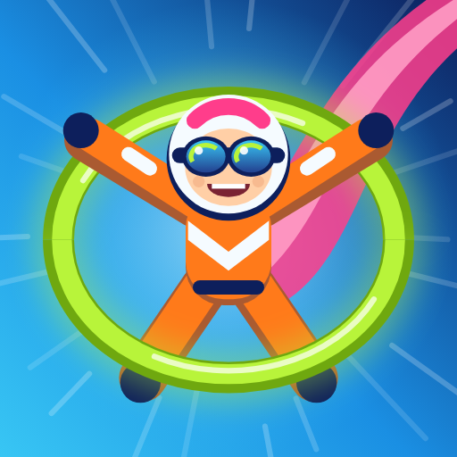
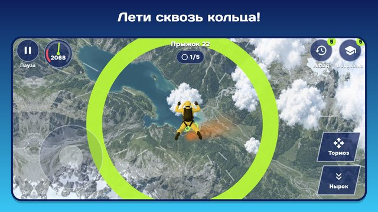

Затяжной прыжок
Шагни из двери самолёта — и лети! Ветер свистит, земля в четырёх километрах внизу, а до раскрытия парашюта нужно успеть выполнить задание.
Реалистичный затяжной прыжок прямо на телефоне: настоящие облака, поля и города под тобой. Играй за парашютиста или парашютистку, веди героя через кольца, ныряй головой вниз, чтобы догнать друзей, и тормози, раскинув руки. Возьмитесь за руки и замкните круг — держась за руки, вы ведёте строй вместе, а трюки ждут свободного полёта. Крути сальто, бочки, пируэт и сальто с винтом в светящихся полосах, поймай плюшевого мишку, которого уронили из самолёта, и не выпадай из кадра у оператора. Чаек, дронов и грозовые тучи лучше облететь. На высоте 1000 метров всё решается: задание выполнено — раскрывается яркий купол. Не вышло — героя мягко ловит огромный стог сена.

- 300 прыжков над 30 местами планеты: летний луг и море, горы и вулкан, барханы Сахары и оазис, зимний город и деревня в снегу, коралловый атолл, фьорды, ледник, гроза над степью, северное сияние и стратосфера — и что-то новое каждые 10–15 прыжков.
- Ночные прыжки: огни порта, зимняя ночь и ночная Земля с высоты, фонари вокруг мишени.
- Девять трюков: сальто вперёд и назад, бочки, пируэт и четыре сальто с винтом — с объёмным поворотом тела.
- Разные миссии: кольца, групповой прыжок (друзья раскрывают купола рядом с тобой), трюки, ловля, съёмка с оператором и чистый полёт без столкновений.
- Шкафчик: 16 костюмов, у каждого свой купол и цвет дыма; лётная книжка с рекордами.
- Телефон держи боком: левый палец ведёт, правый ныряет, тормозит и крутит трюки.
- Ошибся? «Назад» отматывает прыжок на 5 секунд, а инструктор покажет, куда лететь.
- Прыжок дня — один для всех, и ежедневные задания.
- Играй без интернета, на русском и английском.
По желанию — одно напоминание, если пропадёшь на неделю; выключается в настройках. Дверь открыта — прыгай!